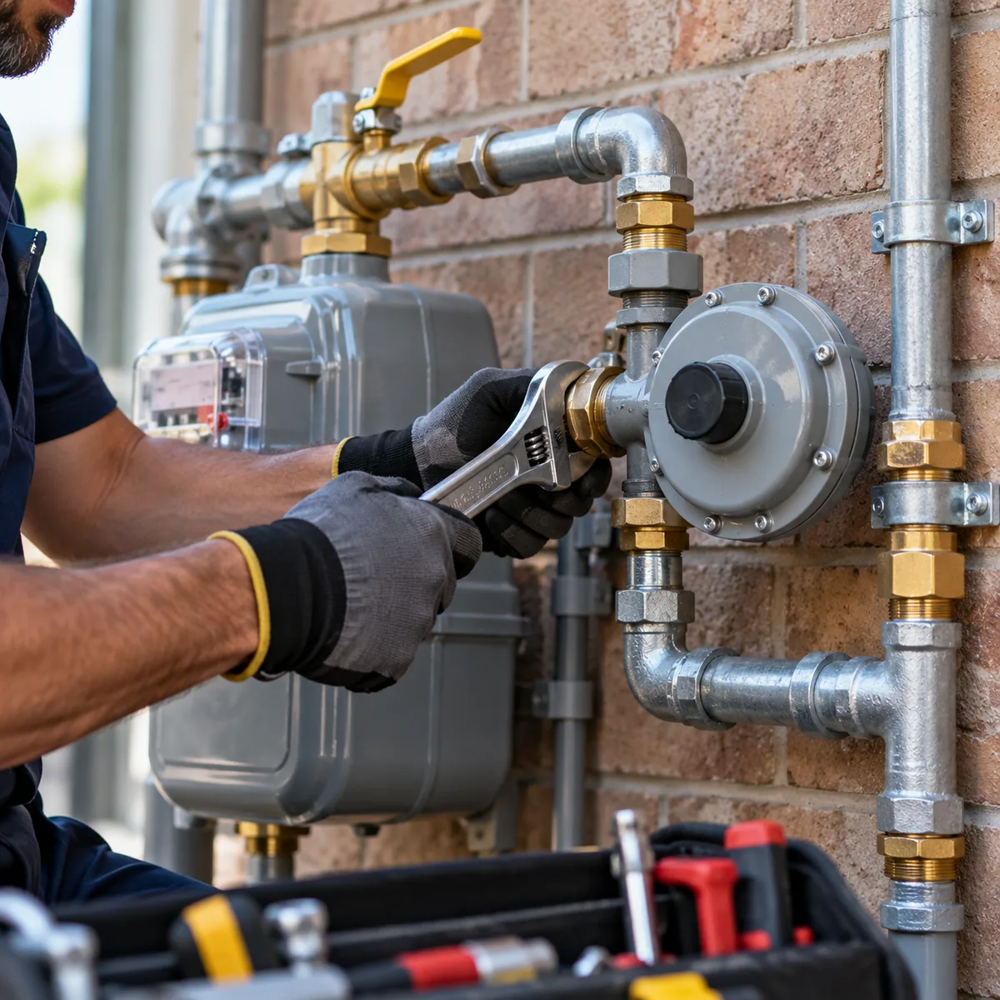
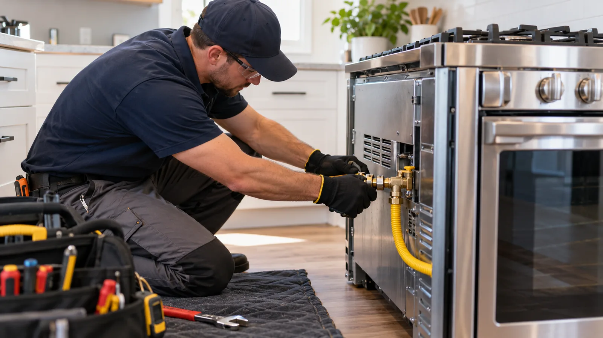
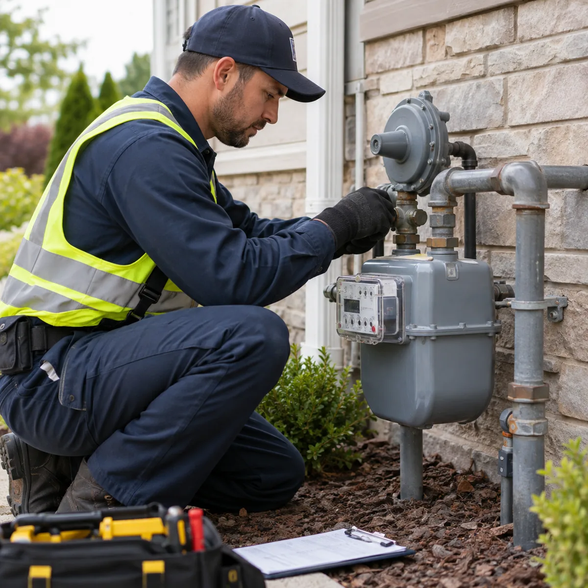
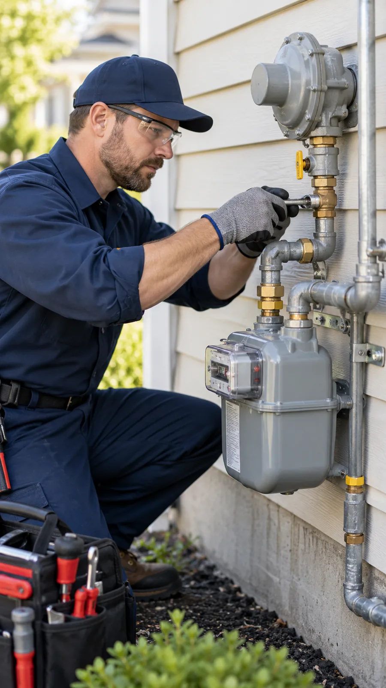
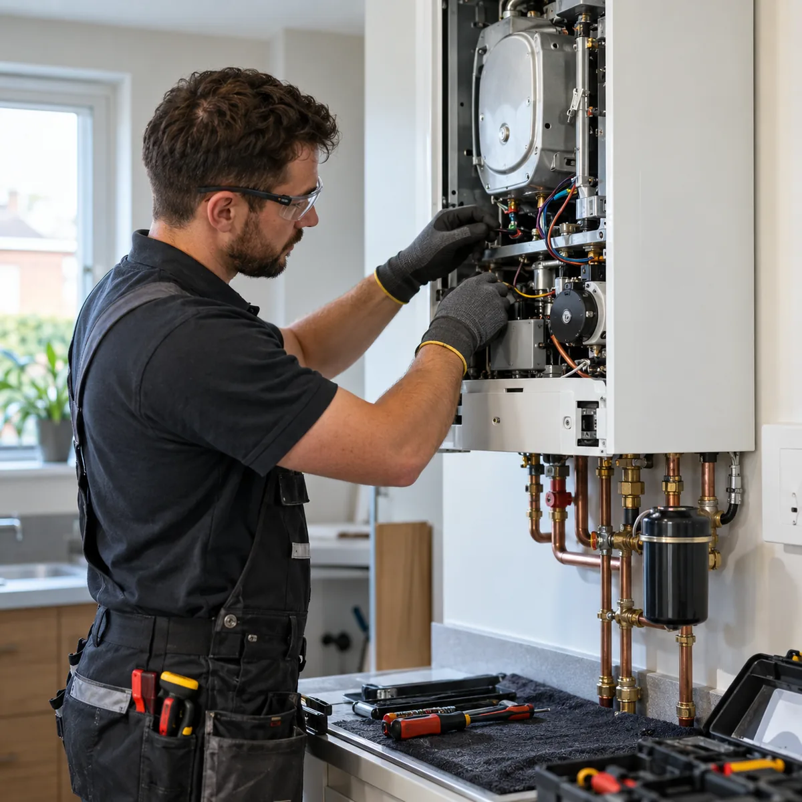
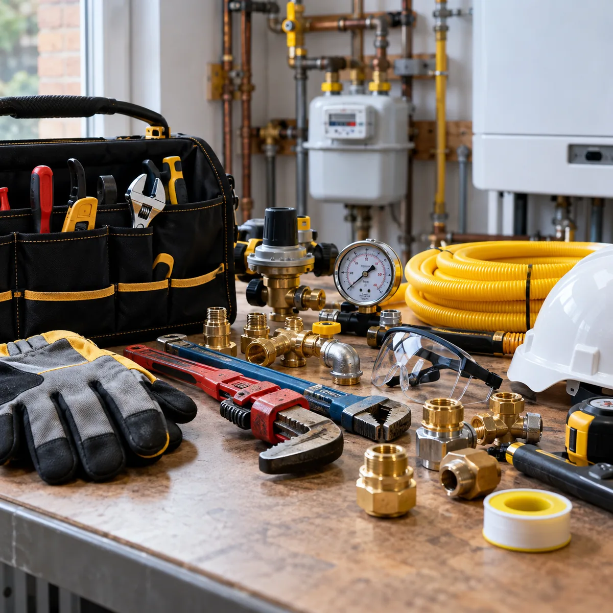

01 / 02
Instalaciones de gas natural
Describinos el espacio y qué necesitás instalar. Te ayudamos a definir el alcance de la consulta.
Consultar este servicioGAS ARGENTINA · INSTALACIONES DE GAS NATURAL
Contanos qué necesitás y conversemos los próximos pasos para tu instalación.

Instalaciones de gas naturalQUÉ HACEMOS
Dos motivos frecuentes para escribirnos. Contanos el tuyo.

Describinos el espacio y qué necesitás instalar. Te ayudamos a definir el alcance de la consulta.
Consultar este servicio
Si necesitás recuperar el suministro, contanos qué pasó y qué información te dio la distribuidora. Conversamos los trabajos necesarios sobre la instalación.
Consultar este servicioCÓMO EMPEZAMOS
Una buena consulta empieza con los datos de tu caso. Así podemos responderte de manera más clara.
Mandanos una descripción breve y, si tenés, fotos de la instalación.
Con esa información conversamos qué intervención necesitás y qué datos faltan.
Coordinamos por WhatsApp cómo avanzar con tu consulta.
EL OFICIO EN IMÁGENES
Estas imágenes son ilustrativas del tipo de tareas y herramientas del rubro; no representan obras realizadas por Gas Argentina.



CONTACTO DIRECTO
Escribinos y contanos si se trata de una instalación nueva o de una reconexión. Te respondemos por WhatsApp.
+54 9 11 6216-2580 Instagram de Gas Argentina ↗